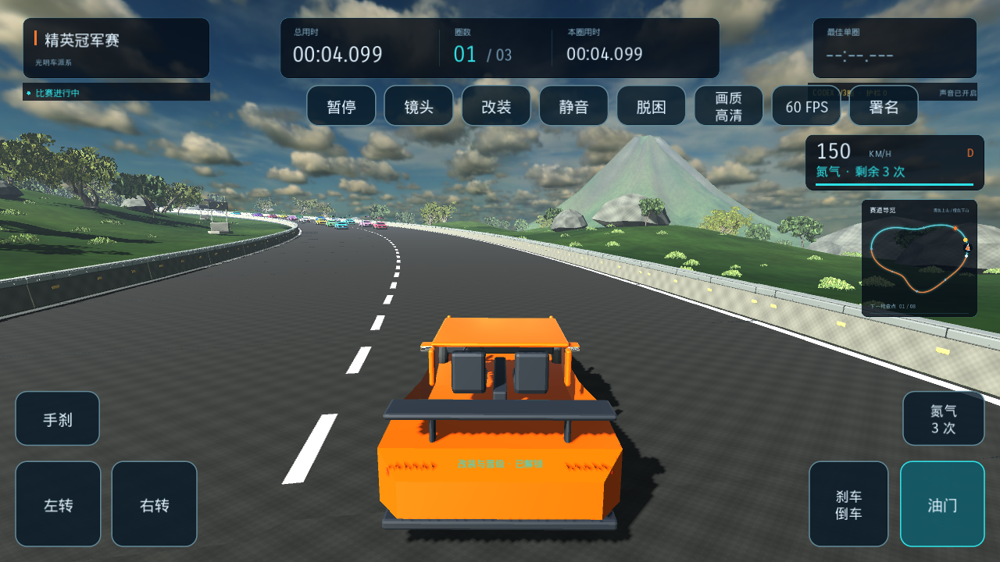

ARM64 · 多数现代手机
适合使用 64 位安卓系统的 ARM 手机。
下载 ARM64 APK242.6 MB模块竞速 / ANDROID
下载 APK，横屏触控驾驶。模块化赛道、赛车升级与生涯赛事，均可离线游玩。
不了解手机处理器时，选择这个。包含 ARM64、ARM32、x86 和 x86_64 四种架构。
下载安卓版 APK ↓317.3 MBefd542d14e3f725ad474c4b16593cf19e4748bd62f98c53cf815d8da52b90d2b
可切换自动、低、均衡、高画质，以及 30 / 60 FPS 目标。比赛规则与电脑版一致。
适合使用 64 位安卓系统的 ARM 手机。
下载 ARM64 APK242.6 MB适合仍使用 32 位安卓系统的 ARM 手机。
下载 ARM32 APK244.0 MBx86_64 包用于 64 位 Intel 安卓系统。32 位 x86 系统请选择通用包。模拟器请启用硬件图形加速。
下载 x86_64 APK · 243.9 MB已有原版请直接覆盖安装以保留手机进度，请勿先卸载。电脑存档不会自动同步到手机。完整安装与更新说明
需要 Android 7.0 或更高版本，以及 OpenGL ES 3.0 图形支持。已在启用硬件图形加速的 Android 7、Android 15 模拟器验证安装与运行；实体 ARM 手机的帧率、发热及触控手感仍需实机确认。查看验证范围。
安装失败时检查下载是否完整、空间是否充足，并尝试通用包。游玩时可先选择低画质、30 FPS。反馈请附手机型号、Android 版本和复现步骤：提交问题。
游戏免费供个人非商业游玩；第三方素材许可分别适用。公开下载版使用原创 AEROGRID GT 外观，赛车品牌与本游戏没有关联或背书关系。查看完整素材署名与许可。